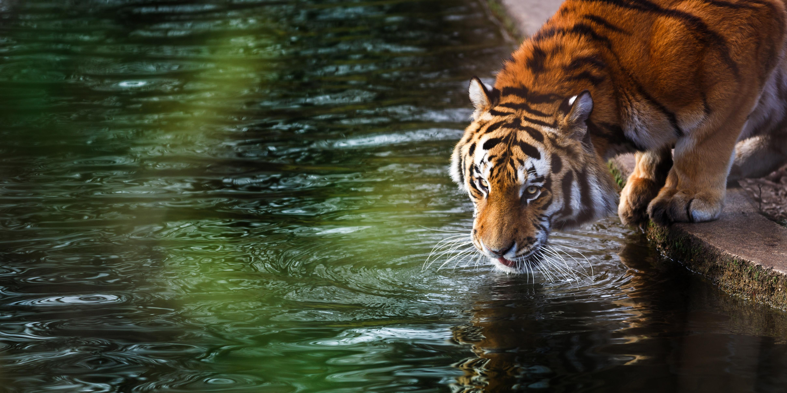
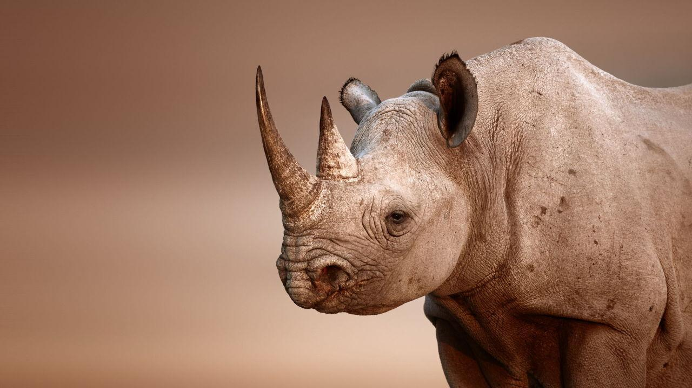
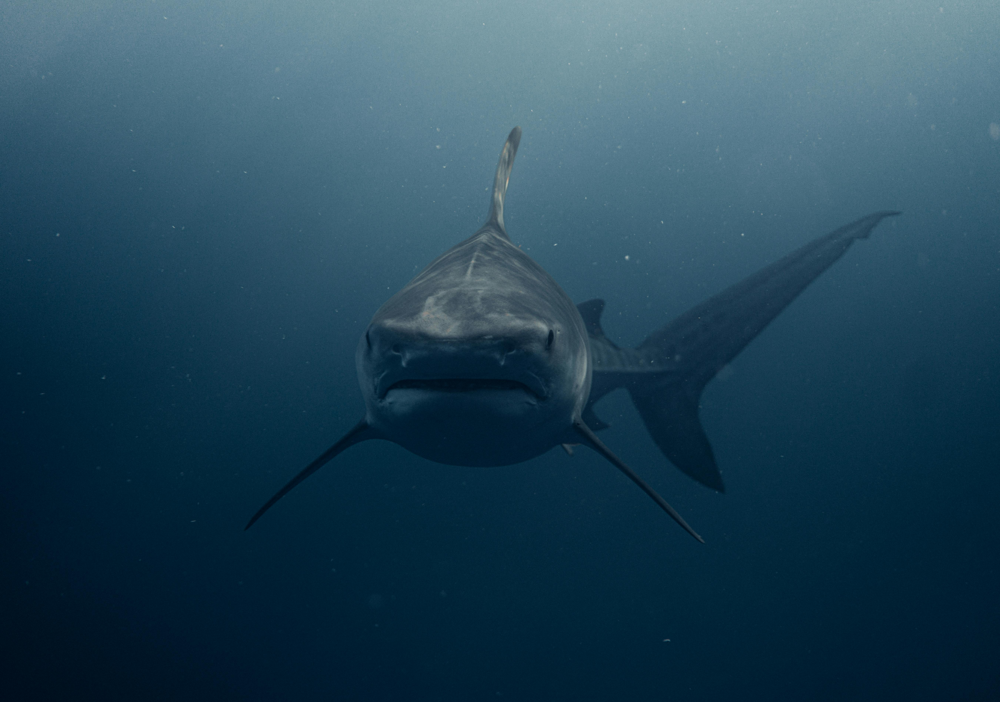
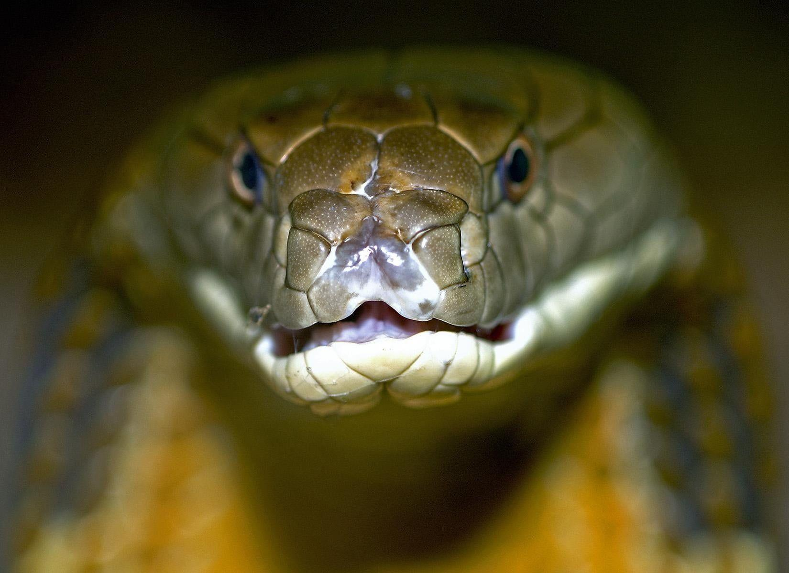

The Alaska moose (Alces alces gigas), or Alaskan moose in Alaska, or giant moose and Yukon moose in Canada, is a subspecies of moose that ranges from Alaska to western Yukon. The Alaska moose is the largest subspecies of moose. Alaska moose inhabit boreal forests and mixed deciduous forests throughout most of Alaska and most of Western Yukon. Like all moose subspecies, the Alaska moose is usually solitary but sometimes will form small herds. Typically, they only come into contact with other moose for mating or competition for mates.
WILDLIFE
LION
ANIMAL
The lion is a large cat of the genus Panthera, native to Africa and India. It has a muscular, broad-chested body; a short, rounded head; round ears; and a hairy tuft at the end of its tail. It is sexually dimorphic; adult male lions are larger than females and have a prominent mane. It is a social species, forming groups called prides. A lion's pride consists of a few adult males, related females, and cubs. Groups of female lions usually hunt together, preying mostly on large ungulates.The lion inhabits grasslands, savannahs, and shrublands. It is usually more diurnal than other wild cats, but when persecuted, it adapts to being active at night and at twilight.
WILDLIFE
ELEPHANT
ANIMAL
Elephants are the largest living land animals. Three living species are currently recognised: the African bush elephant, the African forest elephant, and the Asian elephant. They are the only surviving members of the family Elephantidae and the order Proboscidea; extinct relatives include mammoths and mastodons. Distinctive features of elephants include a long proboscis called a trunk, tusks, large ear flaps, pillar-like legs, and tough but sensitive grey skin. The trunk is prehensile, bringing food and water to the mouth and grasping objects. Tusks, which are derived from the incisor teeth, serve both as weapons and as tools for moving objects and digging.Elephants are scattered throughout sub-Saharan Africa, South Asia, and Southeast Asia and are found in different habitats, including savannahs, forests, deserts, and marshes.
WILDLIFE
LEOPARD
ANIMAL
The leopard is one of the five extant species in the genus Panthera. It has a pale yellowish to dark golden fur with dark spots grouped in rosettes.It is adapted to a variety of habitats ranging from rainforest to steppe, including arid and montane areas. It is an opportunistic predator, hunting mostly ungulates and primates. It relies on its spotted pattern for camouflage as it stalks and ambushes its prey, which it sometimes drags up a tree. It is a solitary animal outside the mating season and when raising cubs. Females usually give birth to a litter of 2–4 cubs once in 15–24 months. Both male and female leopards typically reach sexual maturity at the age 2–2.5 years.The leopard was first described in 1758, and several subspecies were proposed in the 19th and 20th centuries. Today, eight subspecies are recognised in its wide range in Africa and Asia. It initially evolved in Africa during the Early Pleistocene, before migrating into Eurasia around the Early–Middle Pleistocene transition.
WILDLIFE
PYTHON
REPTILE
Python brongersmai is a species of nonvenomous snake in the family Pythonidae. The species is native to Southeast Asia.Python, any of about 40 species of snakes, all but one of which are found in the Old World tropics and subtropics. Most are large, with the reticulated python (Malayopython reticulatus) of Asia being the longest, with the largest adults measuring 7–8 meters (23–26.2 feet) in length, but there are reports from the island of Celebes (Sulawesi) dating to 1912 of an individual that measured 10 meters (32.8 feet) long.Most pythons are terrestrial to semiarboreal, and a few, such as the green tree python (Morelia viridis) of Australia and New Guinea, are strongly arboreal. Terrestrial pythons are regularly found near water and are proficient swimmers, but they hunt and eat almost exclusively on land. Larger pythons prey mainly on mammals and birds; smaller species also eat amphibians and reptiles.
WILDLIFE
RED FOX
ANIMAL
The red fox (Vulpes vulpes) is the largest of the true foxes and one of the most widely distributed members of the order Carnivora, being present across the entire Northern Hemisphere including most of North America, Europe and Asia, plus parts of North Africa.Red foxes are usually found in pairs or small groups consisting of families, such as a mated pair and their young, or a male with several females having kinship ties. The young of the mated pair remain with their parents to assist in caring for new kits. The species primarily feeds on small rodents, though it may also target rabbits, squirrels, game birds, reptiles, invertebrates[6] and young ungulates.[6] Fruit and vegetable matter is also eaten sometimes. Although the red fox tends to kill smaller predators, including other fox species, it is vulnerable to attack from larger predators, such as wolves, coyotes, golden jackals, large predatory birds such as golden eagles and Eurasian eagle owls, and medium- and large-sized felids.

WILDLIFE
TIGER
ANIMAL
The tiger (Panthera tigris) is the largest living cat species and a member of the genus Panthera. It is most recognisable for its black stripes on orange fur with a white underside. An apex predator, it primarily preys on ungulates, such as deer and wild boar. It is territorial and generally a solitary but social predator, requiring large contiguous areas of habitat to support its requirements for prey and rearing of its offspring. Tiger cubs stay with their mother for about two years and then become independent, leaving their mother's home range to establish their own.The tiger was first scientifically described in 1758. It once ranged widely from the Eastern Anatolia Region in the west to the Amur River basin in the east, and in the south from the foothills of the Himalayas to Bali in the Sunda Islands.

WILDLIFE
RHINOCEROS
ANIMAL
Rhinoceroses are some of the largest remaining megafauna: all weigh at least one tonne in adulthood. They have a herbivorous diet, small brains 400 to 600 g (14 to 21 oz) for mammals of their size, one or two horns, and a thick 1.5 to 5 cm (0.59 to 1.97 in), protective skin formed from layers of collagen positioned in a lattice structure. They generally eat leafy material, although their ability to ferment food in their hindgut allows them to subsist on more fibrous plant matter when necessary. Unlike other perissodactyls, the two African species of rhinoceros lack teeth at the front of their mouths; they rely instead on their lips to pluck food.Rhinoceroses are killed by poachers for their horns, which are bought and sold on the black market for high prices, leading to most living rhinoceros species being considered endangered.

WILDLIFE
SHARK
FISH
Sharks are a group of elasmobranch fish characterized by a cartilaginous skeleton, five to seven gill slits on the sides of the head, and pectoral fins that are not fused to the head.Sharks range in size from the small dwarf lanternshark (Etmopterus perryi), a deep sea species that is only 17 centimetres (6.7 in) in length, to the whale shark (Rhincodon typus), the largest fish in the world, which reaches approximately 12 metres (40 ft) in length. They are found in all seas and are common to depths up to 2,000 metres (6,600 ft). They generally do not live in freshwater, although there are a few known exceptions, such as the bull shark and the river shark, which can be found in both seawater and freshwater. Sharks have a covering of dermal denticles that protects their skin from damage and parasites in addition to improving their fluid dynamics. They have numerous sets of replaceable teeth.Several species are apex predators, which are organisms that are at the top of their food chain. Select examples include the tiger shark, blue shark, great white shark, mako shark, thresher shark, and hammerhead shark.
WILDLIFE
IGUANA
REPTILE
Iguana is a genus of herbivorous lizards that are native to tropical areas of Mexico, Central America, South America, and the Caribbean.The species is a popular quarry for pets, and non-native animals have been widely introduced beyond its native area, into Ishigaki Island, the Florida Peninsula, Hawaii, Singapore, Thailand, Taiwan, and including numerous islands with native Iguana populations in the Lesser Antilles.
WILDLIFE
CROCODILE
REPTILE
Crocodiles (family Crocodylidae) or true crocodiles are large semiaquatic reptiles that live throughout the tropics in Africa, Asia, the Americas and Australia.Although they appear similar, crocodiles, alligators and the gharial belong to separate biological families. The gharial, with its narrow snout, is easier to distinguish, while morphological differences are more difficult to spot in crocodiles and alligators. The most obvious external differences are visible in the head, with crocodiles having narrower and longer heads, with a more V-shaped than a U-shaped snout compared to alligators and caimans. Another obvious trait is that the upper and lower jaws of the crocodiles are the same width, and the teeth in the lower jaw fall along the edge or outside the upper jaw when the mouth is closed; therefore, all teeth are visible, unlike an alligator, which possesses in the upper jaw small depressions into which the lower teeth fit. Also, when the crocodile's mouth is closed, the large fourth tooth in the lower jaw fits into a constriction in the upper jaw. For hard-to-distinguish specimens, the protruding tooth is the most reliable feature to define the species' family. Crocodiles have more webbing on the toes of the hind feet and can better tolerate saltwater due to specialized salt glands for filtering out salt, which are present, but non-functioning, in alligators. Another trait that separates crocodiles from other crocodilians is their much higher levels of aggression.
WILDLIFE
EAGLE
BIRD
Eagle is the common name for the golden eagle, bald eagle, and other birds of prey in the family Accipitridae. Eagles belong to several groups of genera, some of which are closely related. True eagles comprise the genus Aquila. Most of the 68 species of eagles are from Eurasia and Africa.Eagles are large, powerfully-built birds of prey, with heavy heads and beaks. Even the smallest eagles, such as the booted eagle (Hieraaetus pennatus), which is comparable in size to a common buzzard (Buteo buteo) or red-tailed hawk (B. jamaicensis), have relatively longer and more evenly broad wings, and more direct, faster flight to despite the reduced size of aerodynamic feathers. Most eagles are larger than any other raptors apart from some vultures. The smallest species of eagle is the South Nicobar serpent eagle (Spilornis klossi), at 450 g (1 lb) and 40 cm (16 in). The largest species are discussed below. Like all birds of prey, eagles have very large hooked beaks for ripping flesh from their prey, strong, muscular legs, and powerful talons.Eagles normally build their nests, called eyries, in tall trees or on high cliffs. Many species lay two eggs, but the older, larger chick frequently kills its younger sibling once it has hatched. The parents take no action to stop the killing.

WILDLIFE
KING COBRA
REPTILE
The king cobra (Ophiophagus hannah) is a venomous snake endemic to Asia. The sole member of the genus Ophiophagus, it is not taxonomically a true cobra, despite its common name and some resemblance. With an average length of 3.18 to 4 m (10.4 to 13.1 ft) and a record length of 5.85 m (19.2 ft), it is the world's longest venomous snake. The species has diversified colouration across habitats, from black with white stripes to unbroken brownish grey. The king cobra is widely distributed albeit not commonly seen, with a range spanning from the Indian Subcontinent through Southeastern Asia to Southern China. It preys chiefly on other snakes, including those of its own kind. This is the only ophidian that constructs an above-ground nest for its eggs, which are purposefully and meticulously gathered and protected by the female throughout the incubation period.
WILDLIFE
SIAMESE FIGHTING FISH
FISH
The Siamese fighting fish (Betta splendens), commonly known as the betta, is a freshwater fish native to Southeast Asia, namely Cambodia, Laos, Myanmar, Malaysia, Indonesia, Thailand, and Vietnam. It is one of 73 species of the genus Betta, but the only one eponymously called "betta", owing to its global popularity as a pet; Betta splendens are among the most popular aquarium fish in the world, due to their diverse and colorful morphology and relatively low maintenance.Bettas are well known for being highly territorial, with males prone to attacking each other if housed in the same tank; without a means of escape, this will usually result in the death of one or both fish. Female bettas can also become territorial towards one another in confined spaces.